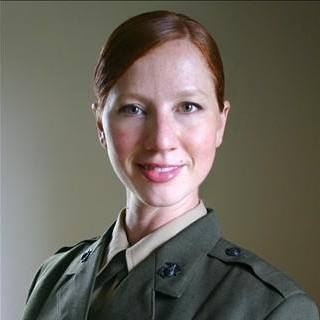
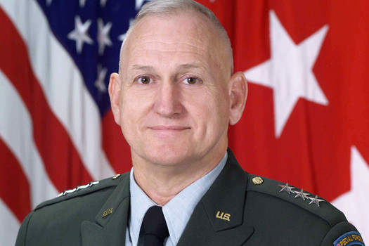

0
Speakers
0
Attending
0
Days
0
Tickets Left

About the Event
You’ve been looking for a Veteran organization that has energy and is on the attack. Vets with purpose and energy.
You came to the right place.
Welcome to Vets in the Fight
You served honorably in any number of places and actions, and your military oath still defines who you are … what you will always be.
"I, do solemnly swear (or affirm) that I will support and defend the Constitution of the United States against all enemies, foreign and domestic, that I will bear true faith and allegiance to the same; that I take this obligation freely, without any mental reservation or purpose of evasion; and that I will well and faithfully discharge the duties of the office upon which I am about to enter; So help me God."
Special Operations Speaks is a name you trust. We, along with the Veteran Patriots Action Conference (VPAC) bring you America’s Security and the Veteran Voter, on October 10 (Columbus Day) and 11, 2016 at Owens Auditorium Sandhills Community College, in Pinehurst, North Carolina.
You’ll hear from speakers who will put the threat to our Nation, to our families and to ourselves in perspective: Lieutenant General Tom McInerney, Chuck Woolery, Major General Sid Shachnow, and Roger Aranoff to name a few. Both Democrat and Republican Presidential Candidates (or their representatives) are invited to come to Pinehurst and explain to you and other Vets in the Fight across America … their positions and solutions to restoring and sustaining the America’s Security. You’ll get to ask questions throughout.
Before the conference ends, you’ll cast your ballot in a straw poll. This event will be live streamed on Facebook. Veterans voting on which candidate you believe is more likely to restore integrity, honor and credibility to the Office of Commander-in-Chief. Don’t miss this historic event, where Duty, Honor and Country is a shared value.
Reserve your tickets today by clicking here
Want to sponsor this event? We’ll display your logo on our programs, and on social media. Click here to sponsor this event
Vets in the Fight are closely allied with Special Operations Speaks and with the non-profit, 501 (c)(19) Veteran Patriots Action Conference (VPAC), that will host a conference "America’s Security and the Veteran Voter", at the Owens Auditorium, Sandhills Community College, in Pinehurst, North Carolina on October 10th and 11th, 2016.
The Schedule
*Times and Speakers are subject to change
-
07:30 to 08:30
Check In and Late Registration
-

08:30
Introduction
Master of Ceremonies
Dave Miller
-
Overview
Vets in the Fight (VIF) Mission
Kenneth Benway/Dick Brauer
-

Media, Truth & the Great Deception
Truth: The glue that holds it all together
Roger Aronoff (Editor, Accuracy In Media)
-

Words from a Warrior
My Backyard is Mexico
Erin Anderson, Delegate to GOP Convention
-
11:30 to 13:00
Lunch Provided
-
K9s for Warriors
Service canines to warriors suffering from Post-traumatic Stress Disability, traumatic brain injury and/or military sexual trauma as a result of military service post 9/11
Shari Duval, K9s for Warriors
-
Military on the Brink
The Military Instrument of National Power
Lieutenant General Tom McInerney (USAF Retired, FoxNews contributor)
-
The World Without Israel
Major General Sid Shachnow, US Army Special Forces Retired, Holocaust Survivor & Author
-
A Moment for Heroes
Wild Bill For America
-
07:30 to 08:30
Check In and Late Registration
-
08:30
Introduction
Outline Day 2
Dave Miller
-

Drafting Our Daughters
Ms. Jude Eden (USMC)
-
Miltary and Veteran Voting
Ms. Glenda Glendenin, Director, Moore County Board of Elections
-
11:30 to 13:00
Lunch Provided
-

Voting Fraud Happens
LTC Jay Delancy, Voter Integrity Project
-

State of Things
America: World Power to Also-Ran
Lieutenant General Jerry Boykin, US Army retired, Capstone speaker, former Commander, US Army Delta Counterterrorism Force, Executive VP Family Research Council
-
15:45
Attendee Straw Poll
Candidate voting and Question: "Which candidate do you believe will protect America and bring integrity, honor and credibility to the office of Commander-in-Chief?"
TBD
-
15:40 to 16:15
Straw Poll Results Announcement
Tabulation of Straw Poll results and announcement. Released via Social Media
TBD
-
16:30
Wrap-up Conclude Veteran Patriots Action Conference
Don't miss this Amazing Vietnam War Story

The Speakers
Experts who will be speaking at the event
Paul E. Vallely, Major General, US Army (Ret.)
Founder, The Stand Up America US Project
Lieutenant General Tom McInerney
USAF (Ret.)
Lt. Gen. Jerry Boykin (Ret.)
Capstone speaker, former Commander, US Army Delta Counterterrorism Force, Executive VP Family Research Council
Erin Anderson
Border Security Advocate

Chuck Woolery
Legendary TV Personality
Roger Aronoff
Editor of Accuracy in Media
Sidney Shachnow
Major General, U.S. Army (Ret.)
Jude Eden
USMC (Ret.)

Ken Benway
Co-founder of Special Operations Speaks
Dick Brauer
Co-founder of Special Operations Speaks
Lt. Col. Jay DeLancy (ret.)
Director of the Voter Integrity Project
Pricing
Flexible packages for individual tickets and sponsorships
Standard On-Site
- Day 1 Registration … $75.00 Credit Card or Cash
- Day 2 Registration … $40.00 Credit Card or Cash
Bronze Sponsorship
- Name and Logo on Program
Silver Sponsorship
- Name and Logo on-screen
- Name and Logo on event ads
- Name and Logo on Program
Gold Sponsorship
- Vets in the Fight Coin
- Name and Logo on-screen
- Name and Logo on event ads
- Name and Logo on Program
- Name and Logo on event YouTube videos
Platinum Sponsorship
- Vets in the Fight Coin
- Preferred Seating
- Name and Logo on-screen
- Name and Logo on event ads
- Name and Logo on Program
- Name and Logo on event YouTube videos
Ruby Sponsorship
- Vets in the Fight Coin
- Preferred Seating
- Name and Logo on-screen
- Name and Logo on event ads
- Name and Logo on Program
- Name and Logo on event YouTube videos
- Display table in lobby
Emerald Sponsorship
- Vets in the Fight Coin
- Preferred Seating
- Name and Logo on-screen
- Name and Logo on event ads
- Name and Logo on Program
- Name and Logo on event YouTube videos
- Display table in lobby
- Photo with a distinguished speaker
- Mention as a sponsor on our weekly Don Smith show SITREPS
Diamond Sponsorship
- Vets in the Fight Coin
- Preferred Seating
- Name and Logo on-screen
- Name and Logo on event ads
- Name and Logo on Program
- Name and Logo on event YouTube videos
- Display table in lobby
- Photo with a distinguished speaker
- Mention as a sponsor on our weekly Don Smith show SITREPS
- 10 Minutes to speak onstage during event
When you sponsor one or more wounded vets, we’ll reserve their ticket in your name, We’ll coordinate with a bone fide veteran charity to match your sponsorship with a combat wounded veteran who will attend in your name.
Sandhills Community College
3395 Airport Rd, Pinehurst, NC 28374, United States.
Sponsors
The People and Organizations who make this event possible
FAQs
Common questions and answers
- What is the Veteran Patriots Action Conference (VPAC)?
VPAC is a non-profit, veteran’s organization registered with the IRS under Chapter 501(c) (19) , established in August 2016.
- What is VPAC’s mission?
VPAC provides veterans and their supporters with a forum for the examination and discussion of key U.S. military policies and laws that affect our national security and the soldiers, sailors, Marines and Airmen affected by them. It encourages veteran engagement in voting, in supporting other veterans for elective office, and encourages exercising accountability of incumbent legislators for their positions and votes on veteran isues.
- Where is VPAC located?
VPAC is located in Alexandria, Virginia.
- Who runs VPAC?
VPAC is run by its unpaid co-founders: Colonel Richard Brauer, US Air Force, retired, and Lieutenant Colonel Kenneth Benway, US Army, retired.
- We hear the term Vets in the Fight. What is that about?
Vets in the Fight is our description for the collective and shared responsibilities that every honorably discharged veteran has to uphold the military oath they took on enlistment or commissioning. Never before in the history of our Republic have we needed the military values of Duty, Honor and Country to come to the rescue in our time of greatest peril. Vets in the Fight, or VIF for short, share that warrior ethos that does not stop when the uniform comes off. We are organizing VIF to serve three honorable roles going forward:
- To register themselves and their families to vote, and to organize other VIF to do the same.
- To identify and support other VIF to run for elected office.
- To hold publicly accountable elected officials whose decisions affect veterans, their families, and the security of America.
- What is the purpose of the VPAC conference at Sandhills Community College?
In 2012, there were approximately 22 million living American veterans. 6 million of those veterans did not vote in the general election. We intend to remedy that by engaging veterans in the key issue facing America today: that of America’s failing security conditions that have introduced radical Islamic terrorism to our daily lives, most recently at Orlando, where 49 Americans were summarily executed by a radical Islamist terrorist. Russia and China present large scale, conventional threats to our nation. If there is one set of issues that veterans understand it is the security of their families, of their neighbors, and the defense of the Nation. Our subject matter expert speakers will update veterans on the intertwined issues of diplomacy, information, military and economic factors, all critical to America’s security. We hope to have presidential candidates or their representatives come in and present their policies and strategies for defeating the immediate threat by ISIS and to counter Russian and Chinese expansionism. Veterans in attendance and viewing online will then cast their straw poll vote for the candidate who’s security strategy is most convincing.
- What happens after the VPAC Conference?
We will then conduct a drive to register veterans and their families to vote on November 8th for the candidate they believe will ‘bring integrity, honor and credibility to the Office of Commander-in-Chief “, and on whose leadership the safety of our Nation and our Constitution pivot.
- Who is sponsoring the Conference?
Sponsors include Special Operations Speaks, K9s for Warriors, America Working, and others (being confirmed).
Hotels
Recommended hotels for stay during event
Preferred Hotel
Under $300
Renovated in 2012, the non-smoking, three-story Springhill Suites Pinehurst offers 107 rooms with free Wi-Fi, cable TV with premium channels, separate sitting areas, work desks, coffeemakers and kitchenettes. Hot buffet breakfast is on the house each morning. Afterward, guests can take a dip in the outdoor pool, relax in the hot tub or have a barbeque in the picnic area. A business center provides copy, fax and print services, and there's a coin laundry facility and a fitness room for added convenience. Parking is free.
View on mapUnder $200
Special Rates for Ticket holders! Renovated in 2011, the four-story Homewood Suites offers 96 rooms, most non-smoking, with mp3-player docking stations, sofa beds, free Wi-Fi and kitchenettes with refrigerators, microwaves, stovetops, dishwashers and kitchenware. Guests enjoy a complimentary hot breakfast buffet daily and complimentary beverages and a light dinner in the lobby, Monday-Thursday evenings; the sports bar and grill also serves lunch and dinner. Other amenities include a seasonal outdoor pool with a fountain, a fitness room, a small convenience store, a free airport shuttle and a business center. Pets are allowed for a fee and parking is free.
View on mapUnder $70
Features include a seasonal outdoor swimming pool and a launderette.Cable TV and a telephone are provided in the simply decorated rooms at the the Super 8 Aberdeen Southern Pines.
View on mapOther
to
Rates Vary
Get updates on event and Vets in the Fight
Stay informed by entering your email address below
About Vets in the Fight
Mission
The mission of Vets in the fight is, via the ballot box, "to bring integrity, honor and credibility to the Office of Commander-in-Chief in November 2016."
We begin that mission by conducting the Veteran Patriots Action Conference (VPAC), titled America’s Security and the Veteran Vote.
Background
Vets in the Fight are more than people, although veterans with honorable service are the key parts. Vets in the Fight is also a unifying concept intended to give veterans a voice in the direction of their Republic. The criteria for membership is having served honorably and to sustain an enduring loyalty to their military oaths and the Nation. The Vets in the Fight concept finds its beginnings at the Heritage Foundation in Washington, D.C. in September 2013, at the first conference of the Accuracy in Media (AIM) Citizen’s Commission on Benghazi. The discussion of circumstances surrounding the deaths of four Americans who called for help several times from their government, but were abandoned by the highest leadership levels; clearly a frustrating topic for the panels and for the AIM panelist and the audience.
A veteran seated in the audience stood up and asked the question: "I’m Mike. What can Mike do?".
We took Mike’s penetrating question very seriously; so fundamental, yet so complex. We determined that the Veteran had no unified/effective voice in our government, even though his and her contributions to the national well being and security was all out of proportion to their numbers.
An Amazing Ratio
Here is a ratio worth keeping in mind: In WW II, eleven percent of the population was in uniform. So, in a crowd of 100 Americans, 11 would be in uniform. Today, 0.58% of Americans are in military uniform. In a crowd of 200 Americans, only one will be in uniform. That is a lot of security bang for the buck (at a time when the military is being cut back to dangerous levels, in increasingly dangerous times, overseas as well as domestically.
Six Million Vets Did Not Vote in 2012
Official data shows that 27% of all living vets did not exercise their most precious right in 2012, one that they themselves sacrificed so much, so that other peoples in distant lands could acquire and exercise that very right.
We have to believe that many if not most of our non-voting vets failed to vote because they did not fully grasp the criticality of their vote, either individually or as a group. In North Carolina approximately 209,000 vets did not either register to vote, or did not take the time to vote in 2012.
We need to fix that. It will be their most important Timely / Conference for Veterans
Paul E. Vallely, Major General, US Army (Ret.)
MG Paul E. Vallely was born in DuBois, PA and served a distinguished career of 31 years in the US Army before he retired as Deputy Commanding General, US Army Pacific, in Honolulu, Hawaii in 1992. General Vallely graduated from the US Military Academy at West Point and earned his commission in the Army in 1961.
General Vallely is a graduate of the Infantry School, Ranger and Airborne Schools, Jumpmaster School, the Command and General Staff School, the Industrial College of the Armed Forces, and the Army War College. His combat service in Vietnam included positions as infantry company commander, intelligence officer, operations officer, military advisor, and aide-de-camp. He has over fifteen (15) years’ experience in Special Operations, Psychological Operations, and Civil-Military Operations.
After serving in two combat tours in Vietnam, he also served in several other overseas theaters in Europe and Pacific Rim countries. Vallely served on US security assistance missions and on civilian-military relations tours in Europe, Japan, Korea, Thailand, Syria, Iraq, Kuwait, Turkey, Israel, Indonesia, and Central America. He has served as a consultant to the Commanding General of the Special Operations Command as well as the DOD Anti-Drug and Counter-Terrorism Task Forces. He also designed and developed the Host-Nation Support Program in the Pacific for the DOD and the State Department.
MG Vallely has been on radio and television for many years, most notably serving as the senior military analyst for the Fox News Channel from 2001-2008 and most recently on Newsmax TV. He is a guest lecturer on multiple fronts including national security, international politics, economics, strategic planning, US foreign policy, and the Global War against Radical Islam and other threats to America. He and LTG Thomas McInerney co-authored the book, “Endgame” – "Blueprint for Victory for Winning the War on Terror”. MG Vallely conducts an average of 4-6 national radio/TV show interviews per week and is well known for his published articles and talks on National Security and domestic issues.
Vallely is the Founder of Nemo Arms Inc. of Kalispell, Montana and is the Chairman of Stand Up America US. He also leads the Legacy National Security Advisory Group, the Syrian Opposition Liaison Group (SOLG), and is a founding member of the Citizens' Commission on Benghazi and the Iran Policy Group. Vallely has extensive business experience since retiring from the Army serving as a CEO for three separate Corporations. His travel history is extensive and on five occasions in three years he led fact finding missions to the Syrian Conflict with his SOLG team; once traveling deep inside the Syrian war zone. Additionally, during that period, he co-chaired two separate delegations to Cairo, Egypt to meet with President El-Sisi and his senior staff. Most recently, he was invited to Europe to present his six-point plan for solving the European/Syrian Refugee crisis.
Paul and his wife Marian are the co-trustees of the Scott Vallely Soldiers Memorial Fund and reside in Montana. Both are deeply involved in numerous humanitarian efforts and are active participants in a multitude of community events and activities.
Lieutenant General Tom McInerney
After graduating from West Point and a military career spanning 35 years, as a highly decorated fighter pilot, commander and strategic planner in the United States Air Force, Lt. General Tom McInerney retired from active military service in 1994 as Assistant Vice Chief of Staff, United States Air Force, and Director of the Defense Performance Review (DPR), reporting to the Secretary of Defense.
General McInerney is Command pilot with more than 4,500 flying hours, including 407 combat missions during four tours in Vietnam both as Forward Air Controller in O-1 (Bird-dogs) and flying the mighty F-4 Phantom. Tom flew reconnaissance missions during the 1962 Cuban missile crisis and air escort missions in the Berlin Corridor.
General McInerney served in key Air Force assignments where he gained extensive military command and overseas experience, such as in NATO, the Pacific Air Forces (PACAF) and as Commander of the 11th Air Force in Alaska. In 1986 Tom served as Vice Commander-in Chief, Headquarters, US Air Forces in Europe (USAFE) at Ramstein AB, Germany.
General McInerney’s awards and decorations include the Distinguished Service Medal, the Defense Superior Service Medal, Legion of Merit, Distinguished Flying Cross w/OLC, Bronze Star with V for valor device, 18 Air Medals and other awards to include The Third Order of the Rising Sun by the Japanese government for outstanding service in enhancing relations between the United States and Japan.
A respected military analyst, commentator and author, General McInerney is a FOX News Military Analyst, appearing regularly on the FOX News Channel as well as on other national television networks and syndicated radio shows. He is also a frequent contributor of articles to The Wall Street Journal, Washington Post, Washington Times, Weekly Standard and others, and co-author of the book "Endgame: The Blueprint for Victory in the War on Terror."
Ken Benway, LTC, USA (Ret.), Special Forces
Lieutenant Colonel Ken Benway is a co-founder of Special Operations Speaks. He enlisted in the U.S. Army as a parachute infantryman in 1966. He underwent Army Special Forces training and deployed to Vietnam, serving from 1967-68, as a Special Forces medic assigned to a Chinese Nung Company of the I Corps Mobile Strike Force, 5th Special Forces Group. In 1970, he completed Infantry Officer Candidate School, and was commissioned as a Second Lieutenant of Infantry. He then served in leadership assignments in both Germany and Italy with the 509th Parachute Infantry Battalion Combat Team.
Over the course of 27 years in uniform, he served with the 3d, 5th and 10 Special Forces Groups, with the Special Operations Command (Europe), as an Army foreign exchange program officer with the Susa Alpine Infantry Battalion (Italian Army) in northwest Italy, and with the US Army JFK Special Warfare Center and School. On retiring in 1993, he served as senior special operations analyst, program manager and corporate director in a variety of contracted support arrangements with the U.S. Army Special Operations community. Lieutenant Colonel Benway is married, with four children and ten grandchildren.
Chuck Woolery
Chuck Woolery is more than just a legendary TV personality. Even though he’s hosted a number of game shows including Wheel of Fortune, Love Connection, The Dating Game, Greed and Lingo, his real passion is the outdoors, especially fishing.
Chuck grew up in Ashland, Kentucky. He began fishing at a very young age, and he hasn’t stopped since. He’s fished all over North America, from the Deep South to the wilds of Canada.
He’s spent much of his life searching for the best tools and techniques to make fishing even more enjoyable. Now he spends a lot of his time finding and testing new outdoor products for his company, many of which are featured on this site.
Chuck served two years in the US Navy and is the founder of Blunt Force Truth Podcast
Roger Aronoff
Roger Aronoff has worked as a journalist, TV producer, director, writer and distributor. Roger joined AIM in May of 1997 and has written, produced and directed award-winning documentaries including Confronting Iraq: Conflict and Hope, The Clinton Legacy and TWA 800: The Search for the Truth. Aronoff has appeared as a guest commentator on National Public Radio, Air America, CNN, Fox News, CNBC’s “Kudlow & Company,” Court TV, Russia Today, and CTV (Canadian TV), among others. A University of Texas graduate with a B.A. in History, Aronoff has worked as a freelance journalist in South Africa and a columnist for the Jewish Herald Voice.
Erin Anderson
Erin Anderson comes from a homesteading family on the US-Mexican border. They have owned land there since the late 1800’s. She has spoken about the border, China, and the related national security issues to various civic & political groups around the United States. Ms. Anderson has participated on foreign policy panels and as a guest on radio talk programs nationwide.
She acquired first hand experience with the border and immigration issue after traveling extensively along the U.S. - Mexican border and into Northern Mexico to monitor the smuggling routes. During the Bush Administration, as a subject matter expert, Ms. Anderson worked on several projects for the Department of Homeland Security.
She collaborated on a two-part study entitled, The Open Borders Lobby and the Nation’s Security After 9/11. David Horowitz, editor for the Front Page Magazine, published the study and also wrote the Forward. Before becoming involved in the illegal immigration/border issue, Ms. Anderson worked as a consultant and senior analyst for national security and terrorism issues in the Washington, D.C. area. Her focus was on the China/Asia region, including, business, military and academia.
Her experiences in China have varied from researcher and teacher to sales and business development, and more recently to national security concerns. Her business experience served as the basis for an independent study of the Overseas Chinese Networks. During her time at the National War College, Ms. Anderson worked on a project addressing the US economic and national security challenges with China.
Ms. Anderson has lived and worked in Australia, New Zealand, Taiwan, Mainland China, and Hong Kong. She has traveled extensively in India, Malaysia, Viet Nam, and the Philippines.
She also worked on Capitol Hill for Arizona Senator Barry Goldwater, Congressman Jack Kemp, the House Republican Conference, and the National Republican Congressional Committee.
Ms. Anderson is a graduate of the University of Arizona and the Thunderbird School of Global Management in Arizona. She also audited advanced study courses at the National War College of the National Defense University in Washington, D.C.
Jay DeLancy
Jay DeLancy launched the Voter Integrity Project of North Carolina in early 2011 to empower citizens who are concerned about the state’s antiquated and fraud-friendly election laws. Their mission is “to restore trust in the democratic process through analysis, detection and prevention of vote fraud.”
Their work has earned coverage in the PBS NewsHour, New York Times, USA Today, Wall Street Journal, NewsMax TV, CNN, MSNBC, Fox News, the Drudge Report, World Magazine, filmmaker, James O’Keefe and even Russia Today. In 2014, a PBS crew filmed the Voter Integrity Project’s efforts in Asheville for a Frontline documentary on NC politics.
The group’s data analysis techniques helped them to find almost 30,000 deceased persons on NC’s voter rolls (while helping BOE officials prevent similar future errors); to find more than 500 registered voters who later evaded jury duty by claiming to be non-US citizens; and to trigger a multi-state criminal investigation into interstate-double voting. To date, their research has triggered 17 criminal referrals, three indictments and two felony convictions. Scores of cases are still pending.
Their ground-breaking data-mining research and voting pattern analysis drew attention from the NC General Assembly as they worked to reform the state’s fraud-friendly election laws. In the end, several VIP-NC legislative agenda items were written into state law, including a measure that prevents election officials from disenfranchising military absentee voters. They also pushed for a law that required NC to join the Interstate Crosscheck Consortium, which later resulted in the state’s discovery of 81 “dead” voters and more than 35,000 people suspected of interstate double voting during 2012’s November election.
The group’s current operations include advising law enforcement officials on vote fraud analysis, developing vote fraud mitigation strategies and producing a documentary on voter impersonation fraud, due out during the summer of 2016.
DeLancy began his military career as an Army Private in 1979 and retired as an Air Force Lieutenant Colonel in 2011. He has two Master’s Degrees (MBA and MA in Journalism) and teaches full-time at Central Carolina Community College in communication. He resides in Raleigh with his wife, Kasey, and their autistic adult son. Their faith and their chocolate Lab, Reagan, helps them continue to laugh.
Sidney Shachnow
Major General Sidney Shachnow is most known for his 32 years of service with the U.S. Army Special Forces which culminated in his position as commander of the U.S. Army Special Forces Command. General Shachnow served two tours in Vietnam and earned two Silver Stars and three Bronze Stars with V for Valor.
He was born and raised in Lithuania until he was 17. At ten years old Shachnow escaped the notorious Kovno concentration camp in Nazi-occupied Lithuania.
In 1950, he immigrated to the United States. He enlisted in the U.S. Army and later entered Officer Candidate School as a Sergeant First Class. In 1960, Gen. Shachnow was commissioned as an infantry officer.
His 40-year career has included service in the infantry, mechanized infantry, airmobile, airborne and of course special forces units. Gen. Shachnow’s most recent assignments include: Commanding General, John F. Kennedy Special Warfare Center and School, Airborne, Fort Bragg; Commanding General, United States Army Special Forces Command, Airborne, Fort Bragg; Commanding General, U.S. Army-Berlin.
He is the author of the book Hope and Honor. General Shachnow resides in Southern Pines, NC
Dick Brauer
Colonel Richard F. (“Dick”) Brauer Jr. USAF, (Ret) amassed 5,200 hours of worldwide flying, attaining the aeronautical rating of Master Navigator.
His tours of flying duty and deployments include Southeast Asia/Vietnam (1967-68), Europe, Central and South America (1968- 1971) and Australia (1971-1973), where he represented the USAF and the United States as an Exchange Officer, flying as an instructor in the Royal Australian Air Force (RAAF).
Colonel Brauer served as a "plank holder" as the J-3 Air in the Joint Special Operations Command (JSOC) from 1980 to 1983 and graduated from the US Army War College (Class of 1984) with honors, having been awarded First Prize in the Chairman Joint Chiefs of Staff Individual Strategy Essay Competition for his paper on joint hostage rescue operations.
Following his Pentagon tour in the Joint Special Operations Agency (JSOA) and the Joint Staff, he was selected to be the 12th Commandant of the United States Air Force Special Operations School (Hurlburt Field, FL).
Here he served the joint SOF, conventional and interagency communities in that education leadership position for 5 years from 1986 until his retirement in 1991, having completed 26 years of active duty military service.
In 2010 Colonel Brauer was inducted into the Air Commando Hall of Fame.
Lt. Gen. Jerry Boykin
Lt. Gen. (Ret.) William G. "Jerry" Boykin serves as Family Research Council's Executive Vice President.
He was one of the original members of the U.S. Army's Delta Force. He was privileged to ultimately command these elite warriors in combat operations. Later, Jerry Boykin commanded all the Army's Green Berets as well as the Special Warfare Center and School.
In all, Lt. Gen. Boykin spent 36 years in the army, serving his last four years as the Deputy Undersecretary of Defense for Intelligence. He is an ordained minister with a passion for spreading the Gospel of Jesus Christ and encouraging Christians to become warriors in God's Kingdom.
Jerry and his wife Ashley enjoy spending time with their five children and growing number of grandchildren.
Jude Eden
Jude Eden served in the Marine Corps from 2004-2008 as an 0651 Data Communications Specialist. She deployed with her unit, 8th Comm Bn. from 2005-2006 supporting Camp Fallujah's computer communications as well as serving on Checkpoint Duty with the Marine Corps Infantry on the outskirts of the city. Her writing on women in combat has been featured in many publications including Military Review, The New York Times, The Stream, Breitbart, the Daily Signal and more. She has appeared on CNN, Fox News, Newsmax TV and radio shows across the country, and most recently took part in a panel debate hosted by the NY Bar Association and broadcast on CSPAN. She currently lives and works as an IT Systems Administrator in Wilmington.